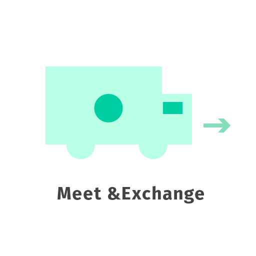

Core Values
the core purpose of Swappr is to provide a medium for people to find and ultimately exchange physical goods. Swappr elevates ideas of community and exchange.
Userbase
initial impressions of userbase are that people interested in bartering, trading, and so forth, many of whom are also involved in community activities, will be using this app.
demographic
- local
- community-oriented
- less tech-savvy
For these users, trust must be fostered. As a result, Swappr is trustworthy, accessible, simple, but not plain.
Typography
Typography should be simple and accessible. Complex and overly haughty typefaces like didones and scripts should be avoided primarily in favor of sans-serifs.
Color
The basis of the color palette is friendly, inviting, and and relaxing.
-
Green
- Hex
- #00CDA1
-
Light Green
- Hex
- #B8FFE6
-
Blue Accent
- Hex
- #87CBFF
-
Off White
- Hex
- #FAFAFA
Off-white should be used as the lightest color in screen contexts.
-
Dark Gray
- Hex
- #414447
This should be the darkest color used in screen contexts.
Photography
Photography may be used to supplement the message that people are interacting and exchanging. Environments should be as natural as possible; ideally, in the context of actually exchanging goods. Subjects should be communicative and interacting with warmth.
Photo filters are discouraged beyond basic editing to make the photo true-to-life.
Identity System
Rather than a static logo, the identity of Swappr is dynamic and contextual. The basis of the identity is built upon physical goods, visualized by circles. The value of this system is in its simplicity and ability to evolve with the brand and the product itself.
Different objects should be represented by different colors.
When using monochromatic color profiles, favor size and using strokes vs fills to differentiate between different goods.
To aid learning within the app, visualisations that match the branding can be an aide.
